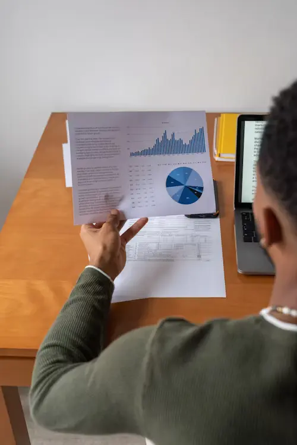
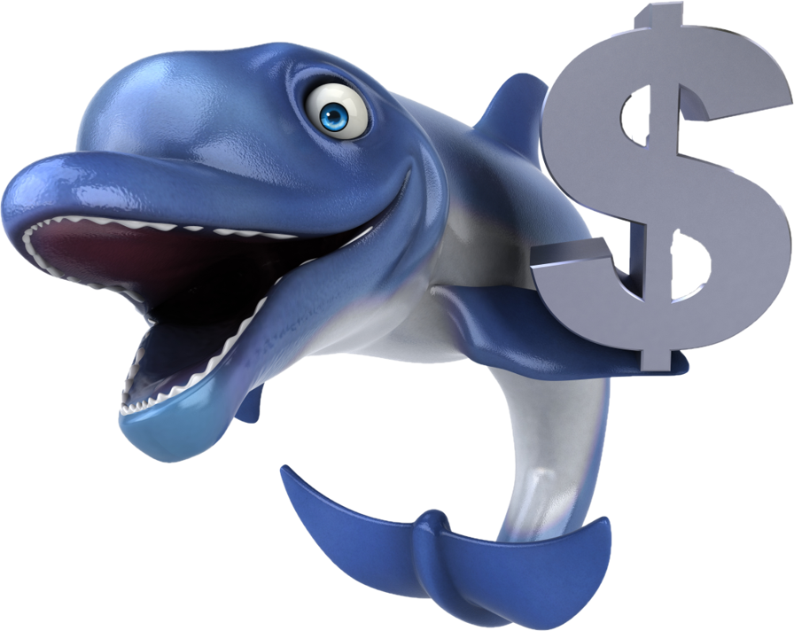
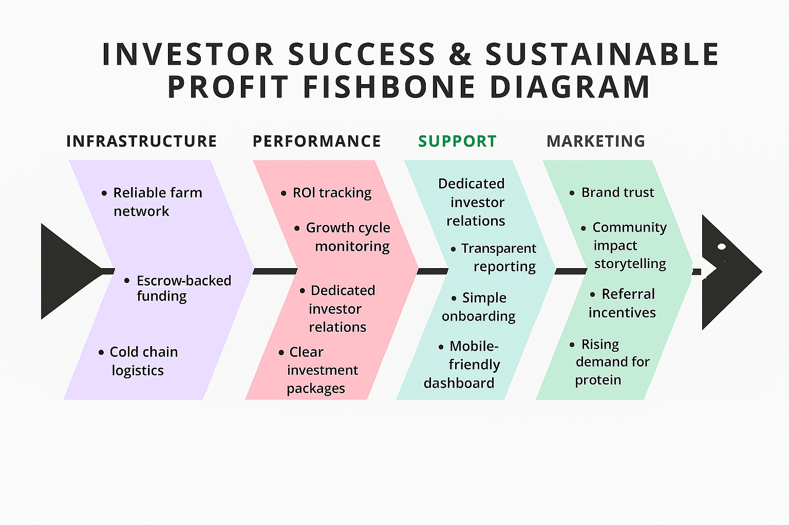

At BlueFin Capital, we make aquaculture investing simple, secure, and impactful. Here’s how it works: You choose an investment package — ₦1M, ₦2M, ₦5M, or ₦10M — based on your goals.
Once you commit, your funds are held in escrow, ensuring full transparency and protection. We then deploy your capital into vetted fish farms operated by experienced partners. Our team oversees the entire process — from farm setup to monitoring the growth cycle,
which typically lasts between 3 to 18 months depending on the package. After harvest and sales, profits are calculated and shared. As an investor, you receive 70% of the net profit,
while 30% supports farm operations, partner sustainability,
and reinvestment into future cycles.
Throughout the journey, you’ll receive regular updates, performance tracking,
and full visibility into how your investment is growing. It’s more than just a financial return — it’s a chance to support food security,
empower local farmers, and be part of a sustainable future.
You invest. We manage. Together, we grow.

Step-by-Step Investment Flow
- Select a package: ₦1M, ₦2M, ₦5M, or ₦10M
- Funds held in escrow
- Farm setup and monitoring
- Growth cycle: 3–18 months
- Harvest and profit payout
Risk Management
- Escrow-backed protection
- Insurance coverage
- Performance tracking
- Experienced farm operators


Ready to Invest?
Take the next step toward purpose-driven profit. Fill out our investor form to begin.